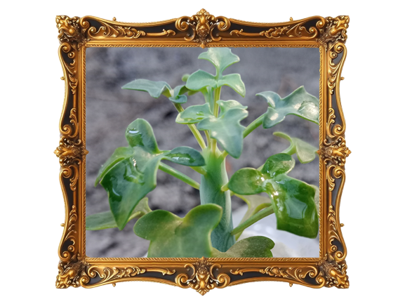

Información detallada de Senecio Articulatus. Es una planta hermosa y fácil de cuidar.
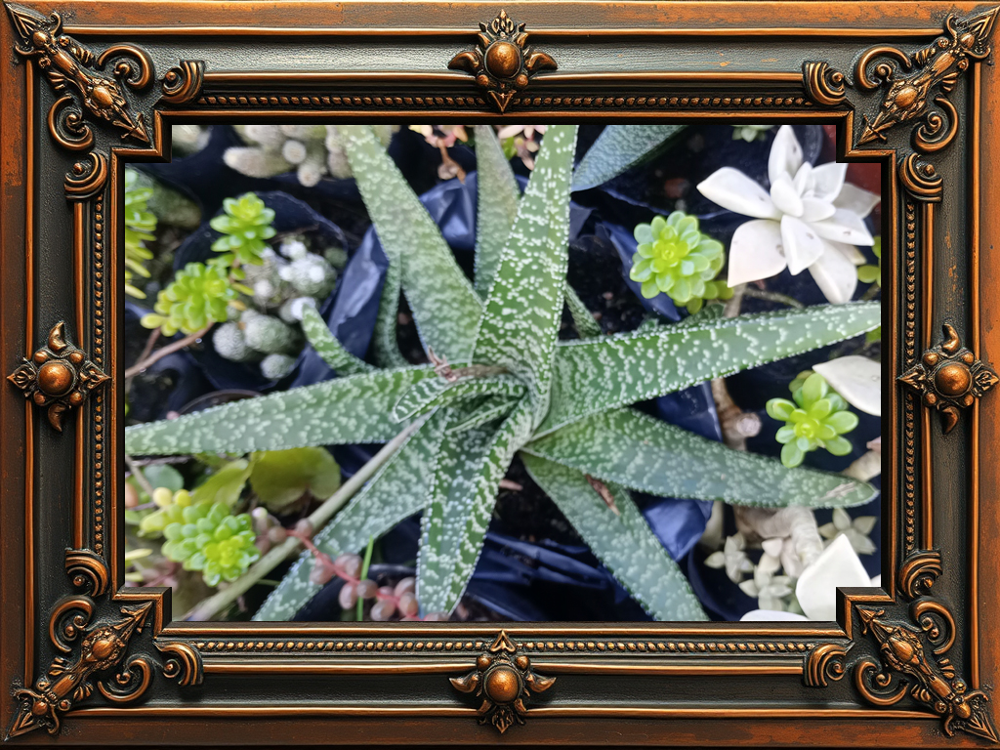

Gasteria Pillansi: Ideal para interiores luminosos.
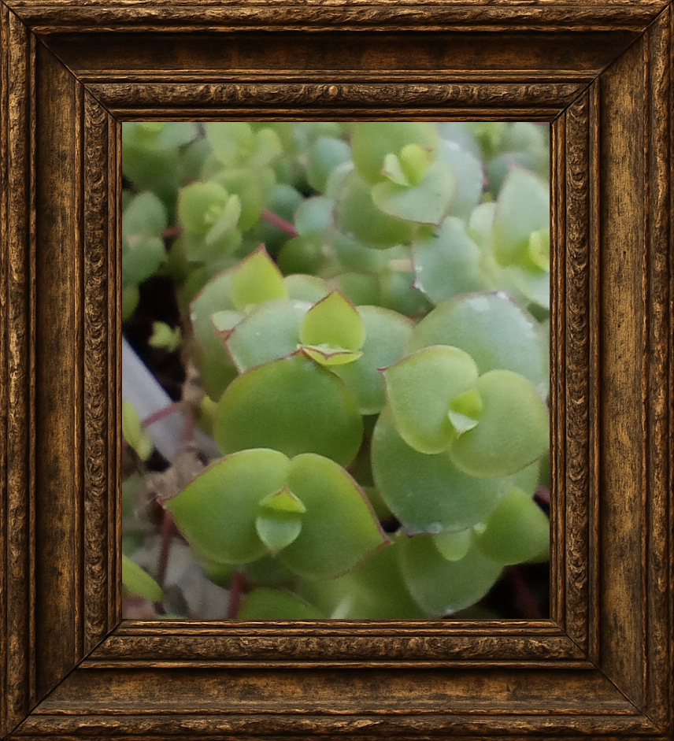

Crassula Pellucida: Colorida y de bajo mantenimiento.
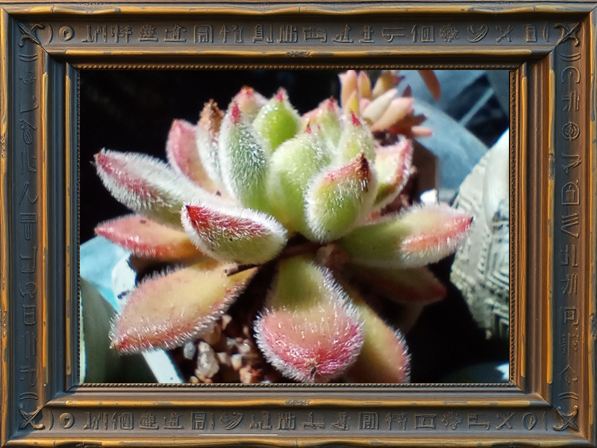

Echeveria Setosa: Con hojas suaves y aterciopeladas.
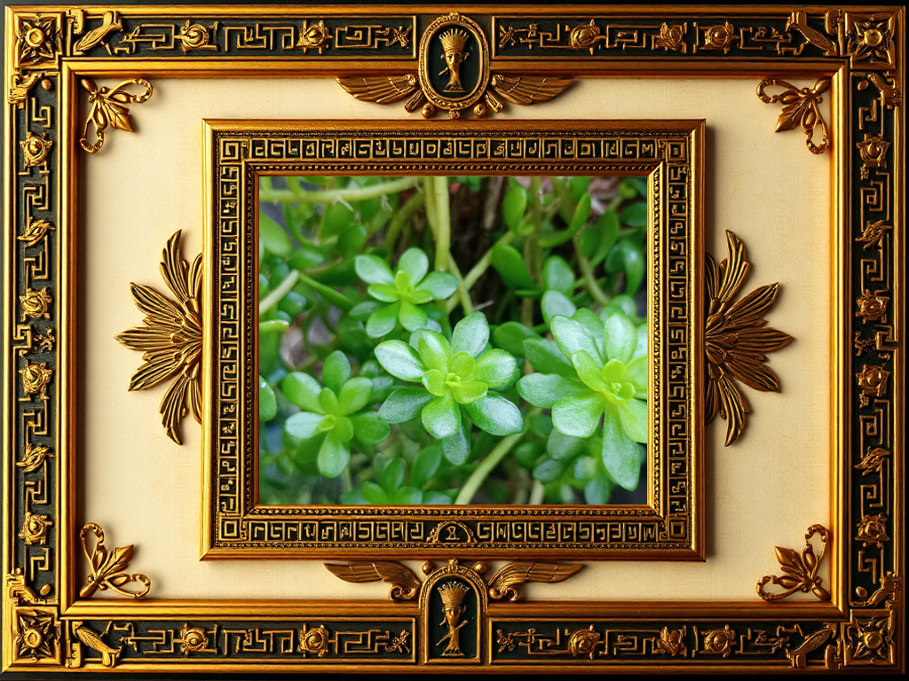

Sedum Luteoviride: Perfecto para rocallas y macetas.
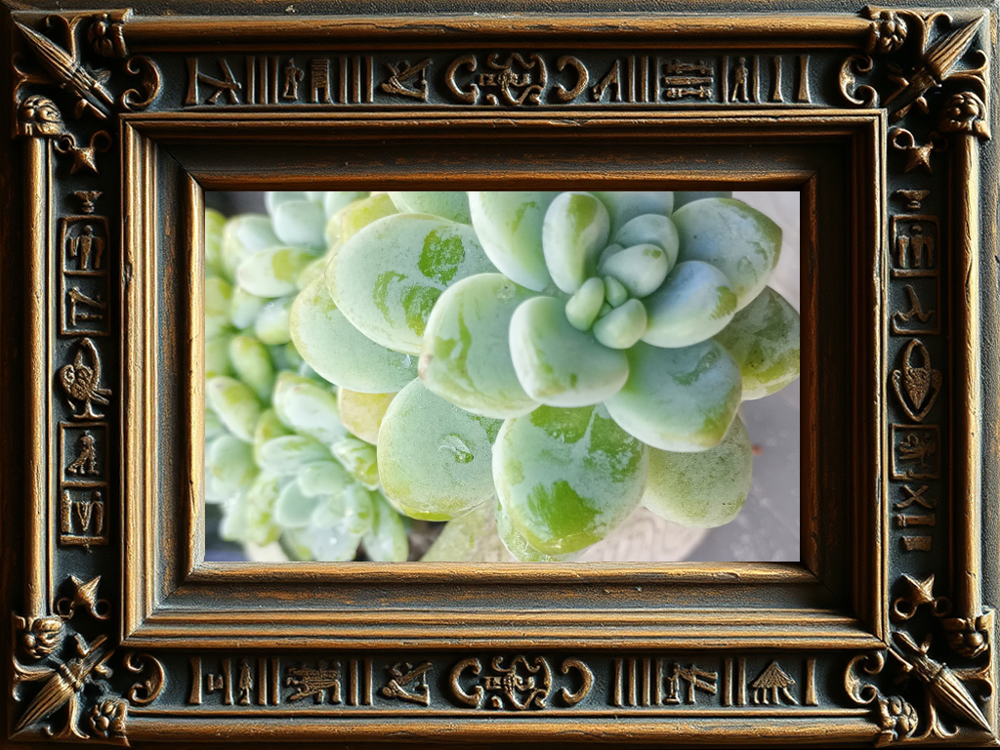

Sedum Clavatum: Forma compacta y atractiva.
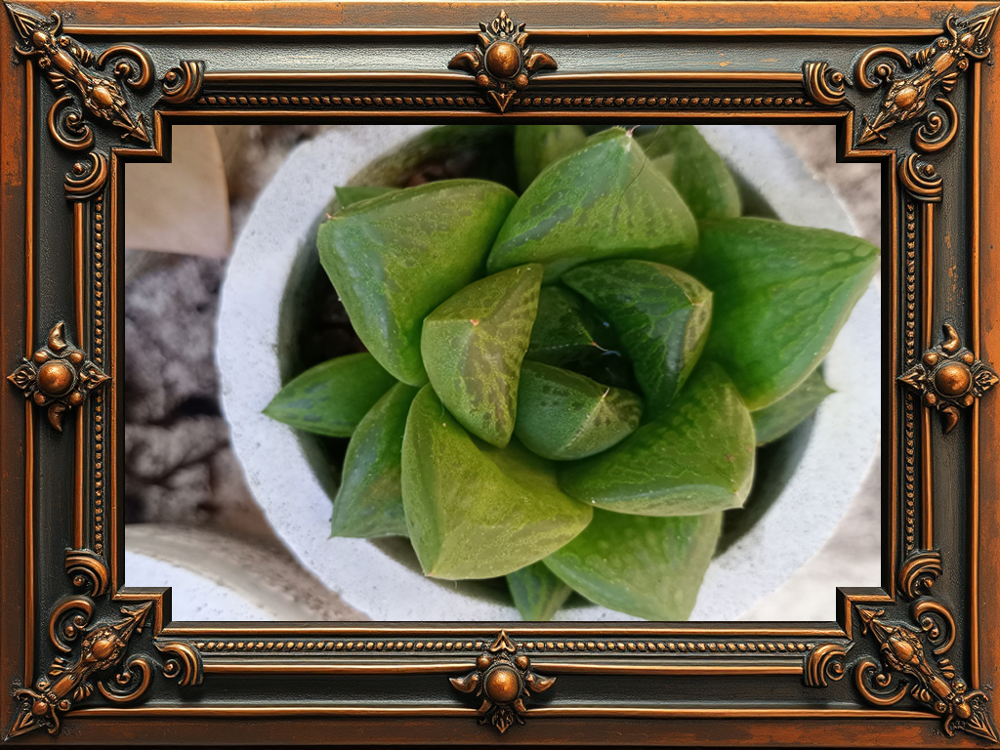

Haworthia Cuspidata: Ideal para principiantes y poca luz.
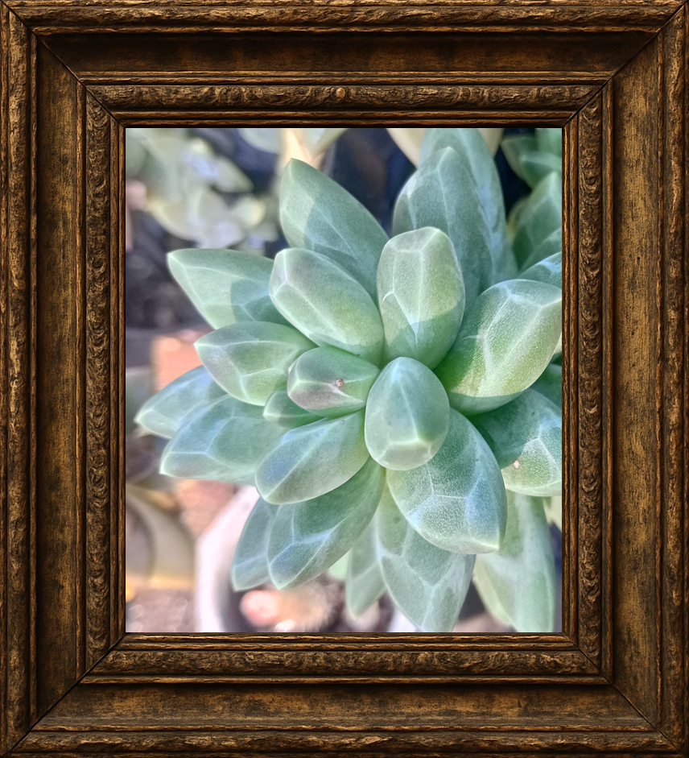

Pachyphytum Compactum: Hojas regordetas y decorativas.
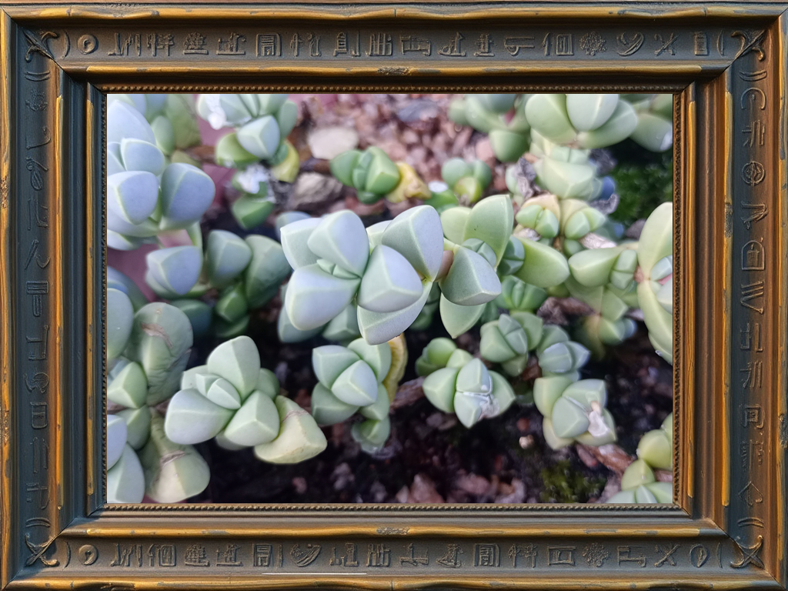

Corpuscularia Lehmannii: Pequeñas flores amarillas.
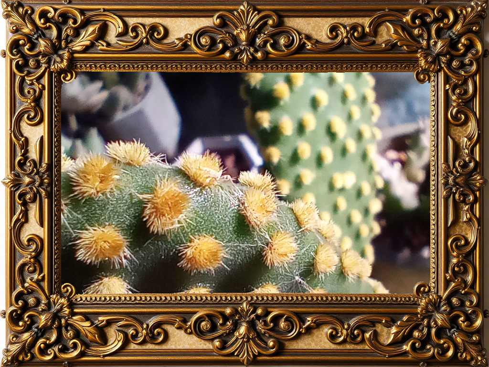

Opuntia Microdasys: El "nopalito" sin espinas.
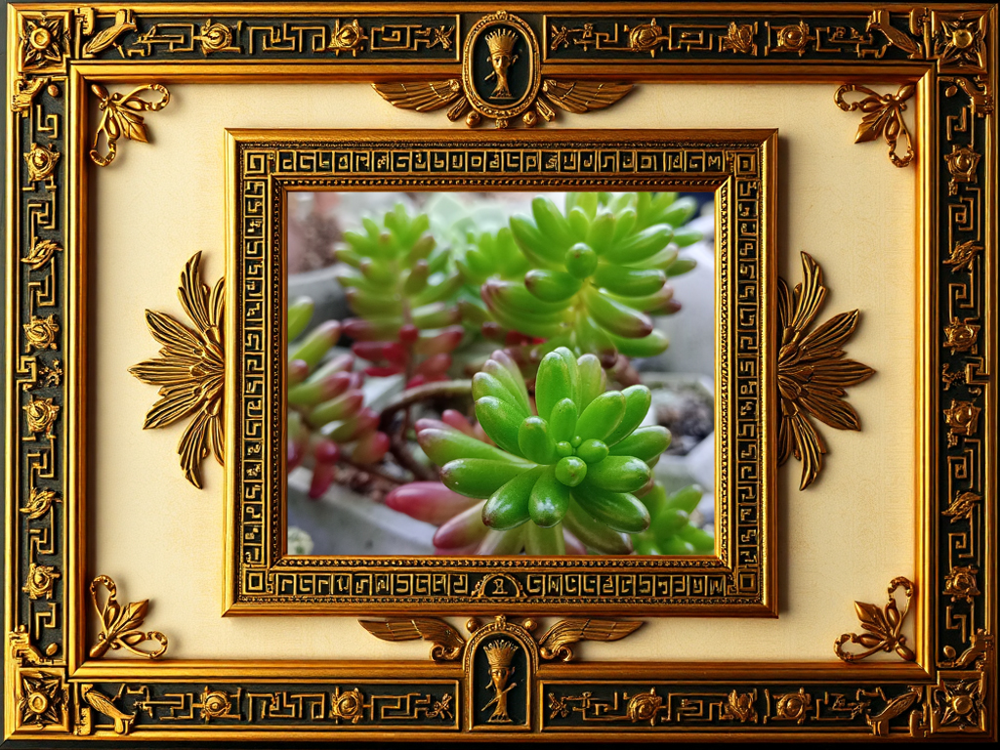

Sedum Rubrotinctum: Se pone rojo bajo el sol.